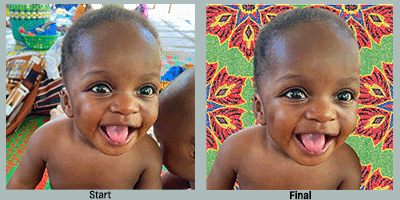

Image Cleanup in Photoshop
These are illustrations of using photoshop to improve image quality.
The first image in each set is the photograph taken and the second, or final, is after improvement.

The background for the main baby, and the head of a second baby were replaced with a ne background.

The bottom half of the background was replaced, mainly to remove the feet of people we could not see.

Here we zoomed in of the subjects, changed the backdrop color for more focus and removed a logo on her shirt.